Rect class#
- class laygo2.object.physical.Rect(xy, layer, color=None, hextension=0, vextension=0, name=None, netname=None, params=None)[source]#
Bases:
PhysicalObjectRectangle object class.
Example
>>> from laygo2.object.physical import Rect >>> rect0 = Rect(xy=[[0, 0], [100, 100]], layer=['M1', 'drawing']) >>> print(rect0) <laygo2.object.physical.Rect object at 0x000002049A77F3A0> name: None, class: Rect, xy: [[0, 0], [100, 100]], params: None, , layer: ['M1', 'drawing']
Notes
(Korean): 사각형 객체 클래스.
Public Data Attributes:
The physical layer information of the object, represented as a list with two elements: [name, purpose].
The net name associated with the object.
The horizontal extension of the rectangle object above its bounding box.
The vertical extension of the rectangle object above its bounding box.
The color (multi-patterning identifier) parameter of the object.
The height of the object.
The width of the object.
The height direction vector [0, self.height] of the object.
The width direction vector [self.width, 0] of the object.
The size of the object ([self.width, self.height]).
Inherited from
PhysicalObjectObject name.
Physical coordinate values of the object in the form of [bottom_left, top_right].
Master ojbect for current object (for arrays and pins).
Dictionary storing the parameters associated with the object
The dictionary containing the key-value pairs of the major physical coordinates of the object, such as 'left', 'right', 'top', 'bottom', 'bottom_left', 'center', etc.
The left-center coordinate of the object.
The right-center coordinate of the object.
The top-center coordinate of the object.
The bottom-center coordinate of the object.
The center-center coordinate of the object.
The bottom-left coordinate of the object.
The bottom-right coordinate of the object.
The top-left coordinate of the object.
The top-right coordinate of the object.
The physical bounding box of the object.
Public Methods:
__init__(xy, layer[, color, hextension, ...])The constructor function.
align(rect2)Match the length of the self and rect2 objects, if either object has a width or height of 0.
Get object information summary.
Inherited from
PhysicalObject
- __init__(xy, layer, color=None, hextension=0, vextension=0, name=None, netname=None, params=None)[source]#
The constructor function.
- Parameters:
xy (numpy.ndarray) – Physical coordinate values of the object in the form of [bottom_left, top_right].
layer (list) – The physical layer information of the object, represented as a list with two elements: [name, purpose].
hextension (int) – The horizontal extension value of the object.
vextension (int) – The vertical extension value of the object.
name (str) – Object name.
netname (str) – The net name associated with the object.
params (dict) – Dictionary storing the parameters associated with the object.
color (str, optional.) – The color (multi-patterning identifier) parameter of the object.
- Return type:
See also
Example
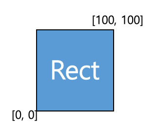>>> import laygo2 >>> rect0 = laygo2.object.physical.Rect(xy=[[0, 0], [100, 100]], layer=['M1', 'drawing'], netname='net0', color=1) >>> print(rect0) <laygo2.object.physical.Rect object at 0x000002049A77F3A0> name: None, class: Rect, xy: [[0, 0], [100, 100]], params: None, , layer: ['M1', 'drawing'], netname: net0
Notes
(Korean): Rect 클래스의 생성자 함수.
- 파라미터
xy(numpy.ndarray): 객체의 물리 좌표 (bbox).
layer(list): 객체의 layer 정보.
hextension(int): 객체의 수평 방향 확장값.
vextension(int): 객체의 수직 방향 확장값.
name(str): 객체의 이름.
netname(str): 객체의 노드 명.
params(dict): 객체의 주요 속성을 갖는 dict [optional].
color(str): 객체의 color [optional].
- _get_xy()#
numpy.ndarray(dtype=numpy.int): Retrive x,y coordinate values of the object.
- _set_xy(value)#
numpy.ndarray(dtype=numpy.int): Update x,y coordinates of the object.
- _update_pointers()#
The internal function that updates the object’s pointers after a change in its physical coordinates.
- align(rect2)[source]#
Match the length of the self and rect2 objects, if either object has a width or height of 0.
- Parameters:
rect2 (Rect) – The rect object to be aligned with self.
- _xy = array([0, 0])#
The x and y coordinate values stored within.
- Type:
numpy.ndarray(dtype=numpy.int)
- property bbox#
The physical bounding box of the object.
Example
>>> import laygo2 >>> obj = laygo2.object.physical.PhysicalObject(xy = [[0, 0], [200, 200]]) >>> obj.bbox array([[ 0, 0], [200, 200]])

Notes
(Korean): numpy.ndarray: 객체의 bbox (bounding box).
- Type:
- bottom = None#
The bottom-center coordinate of the object.
Example
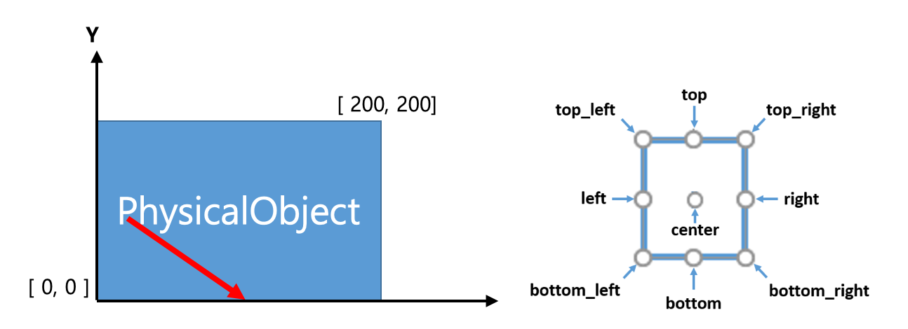>>> import laygo2 >>> obj = laygo2.object.physical.PhysicalObject(xy = [[0, 0], [200, 200]]) >>> obj.top array([100, 0])
- Type:
- bottom_left = None#
The bottom-left coordinate of the object.
Example
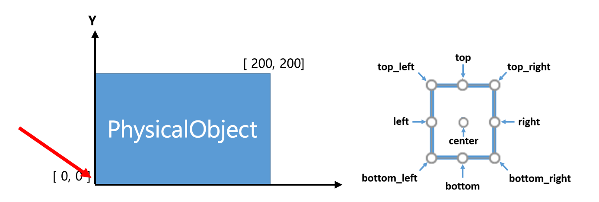>>> import laygo2 >>> obj = laygo2.object.physical.PhysicalObject(xy = [[0, 0], [200, 200]]) >>> obj.bottom_left array([ 0, 0])
- Type:
- bottom_right = None#
The bottom-right coordinate of the object.
Example
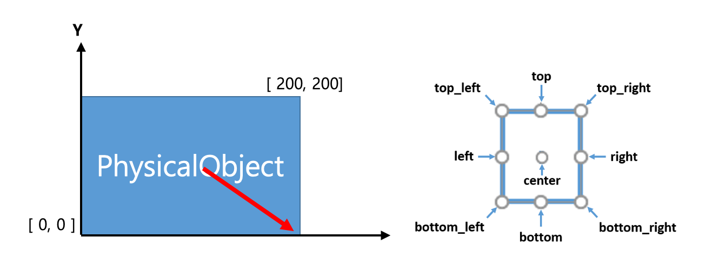>>> import laygo2 >>> obj = laygo2.object.physical.PhysicalObject(xy = [[0, 0], [200, 200]]) >>> obj.bottom_right array([200, 0])
- Type:
- center = None#
The center-center coordinate of the object.
Example
>>> import laygo2 >>> obj = laygo2.object.physical.PhysicalObject(xy = [[0, 0], [200, 200]]) >>> obj.center array([100, 100])

- Type:
- color = None#
The color (multi-patterning identifier) parameter of the object.
Example
>>> import laygo2 >>> rect0 = laygo2.object.physical.Rect(xy=[[0, 0], [100, 100]], layer=['M1', 'drawing'], netname='net0', color=1) >>> rect0.color 1
Notes
(Korean): 객체의 color (multi-patterning ID).
- Type:
int or None or “not_MPT”
- property height#
The height of the object.
Example
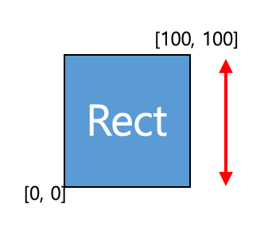>>> import laygo2 >>> rect0 = laygo2.object.physical.Rect(xy=[[0, 0], [100, 100]], layer=['M1', 'drawing']) >>> rect0.height 100
Notes
(Korean): int: 객체의 높이.
- Type:
- property height_vec#
The height direction vector [0, self.height] of the object.
- Type:
numpy.ndarray(dtype=int)
- hextension = 0#
The horizontal extension of the rectangle object above its bounding box.
Example
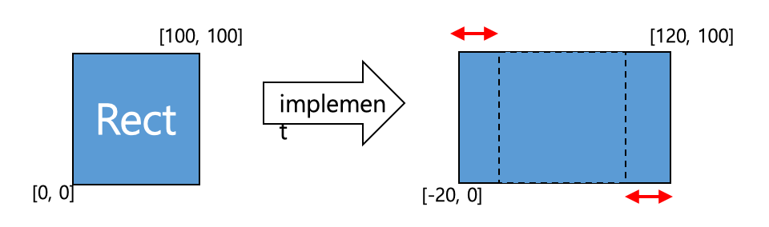>>> import laygo2 >>> rect0 = laygo2.object.physical.Rect(xy=[[0, 0], [100, 100]], layer=['M1', 'drawing'], netname='net0', hextension=20, vextension=20) >>> rect0.hextension 20
Notes
(Korean): 객체의 기존 좌표로부터 수평 방향으로의 확장값.
- Type:
- layer = None#
The physical layer information of the object, represented as a list with two elements: [name, purpose].
Example
>>> import laygo2 >>> rect0 = laygo2.object.physical.Rect(xy=[[0, 0], [100, 100]], layer=['M1', 'drawing'], netname='net0', hextension=20, vextension=20) >>> rect0.layer ['M1', 'drawing']
Notes
(Korean): 객체의 layer 정보 [name, purpose].
- Type:
- left = None#
The left-center coordinate of the object.
Example
>>> import laygo2 >>> obj = laygo2.object.physical.PhysicalObject(xy = [[0, 0], [200, 200]]) >>> obj.left array([ 0, 100])

- Type:
- master = None#
Master ojbect for current object (for arrays and pins).
Example
>>> import laygo2 >>> obj1 = laygo2.object.physical.PhysicalObject(xy = [[0, 0], [200, 200]], name="test1", params=None) >>> obj2 = laygo2.object.physical.Pin(xy = [[0, 0], [100, 100]], layer = ["M1", "drawing"], master=obj1) >>> obj2.master <laygo2.object.physical.PhysicalObject object at 0x00000204AAF3C7C0>
Notes
(Korean): 객체의 master (배열 element 또는 pin 객체들의 master 객체에 연결).
- Type:
- name = None#
Object name.
Example
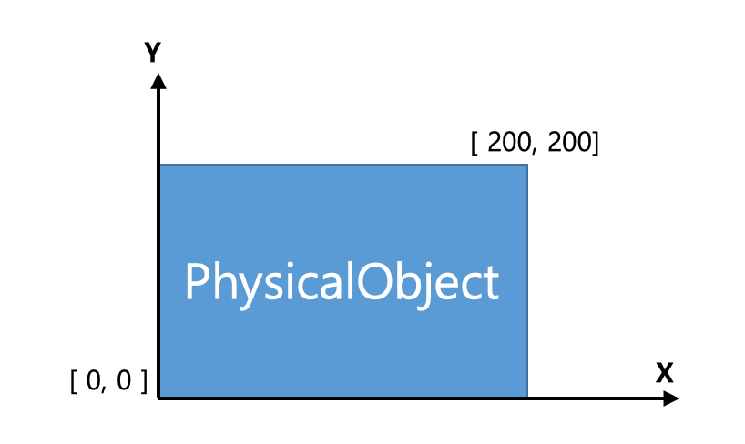>>> import laygo2 >>> obj = laygo2.object.physical.PhysicalObject(xy = [[0, 0], [200, 200]], name="test", params={'maxI': 0.005}) >>> obj.name “test”
- Type:
- netname = None#
The net name associated with the object.
Example
>>> import laygo2 >>> rect0 = laygo2.object.physical.Rect(xy=[[0, 0], [100, 100]], layer=['M1', 'drawing'], netname='net0', hextension=20, vextension=20) >>> rect0.netname “net0”
Notes
(Korean): 객체의 노드 이름.
- Type:
- params = None#
Dictionary storing the parameters associated with the object
Example
>>> import laygo2 >>> obj = laygo2.object.physical.PhysicalObject(xy = [[0, 0], [200, 200]], name="test", params={'maxI': 0.005}) >>> obj.params {‘maxI’: 0.005 }
Notes
(Korean): 객체의 속성.
- Type:
- pointers = None#
The dictionary containing the key-value pairs of the major physical coordinates of the object, such as ‘left’, ‘right’, ‘top’, ‘bottom’, ‘bottom_left’, ‘center’, etc.
Example
>>> import laygo2 >>> obj = laygo2.object.physical.PhysicalObject(xy = [[0, 0], [200, 200]]) >>> obj.pointers {'left': array([0, 100]), 'right': array([200, 100]), 'bottom': array([100, 0]), 'top': array([100, 200]), 'bottom_left': array([0, 0]), 'bottom_right': array([200, 0]), 'top_left': array([0, 200]), 'top_right': array([200, 200]), ‘center’: array( [100, 100] ) }

Notes
(Korean): 객체의 주요 좌표들을 담고 있는 dictionary.
- Type:
- right = None#
The right-center coordinate of the object.
Example
>>> import laygo2 >>> obj = laygo2.object.physical.PhysicalObject(xy = [[0, 0], [200, 200]]) >>> obj.right array([200, 100])

- Type:
- property size#
The size of the object ([self.width, self.height]).
Example
>>> import laygo2 >>> rect0 = laygo2.object.physical.Rect(xy=[[0, 0], [100, 100]], layer=['M1', 'drawing']) >>> rect0.size array([100, 100])

Notes
(Korean): numpy.ndarray: 객체의 크기 ([폭, 높이]).
- Type:
- top = None#
The top-center coordinate of the object.
Example
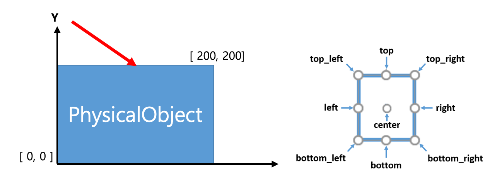>>> import laygo2 >>> obj = laygo2.object.physical.PhysicalObject(xy = [[0, 0], [200, 200]]) >>> obj.top array([100, 200])
- Type:
- top_left = None#
The top-left coordinate of the object.
Example
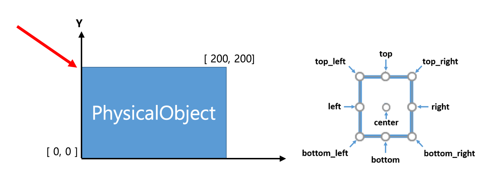>>> import laygo2 >>> obj = laygo2.object.physical.PhysicalObject(xy = [[0, 0], [200, 200]]) >>> obj.top_left array([ 0, 200])
- Type:
- top_right = None#
The top-right coordinate of the object.
Example
>>> import laygo2 >>> obj = laygo2.object.physical.PhysicalObject(xy = [[0, 0], [200, 200]]) >>> obj.top_right array([200, 200])

- Type:
- vextension = 0#
The vertical extension of the rectangle object above its bounding box.
Example
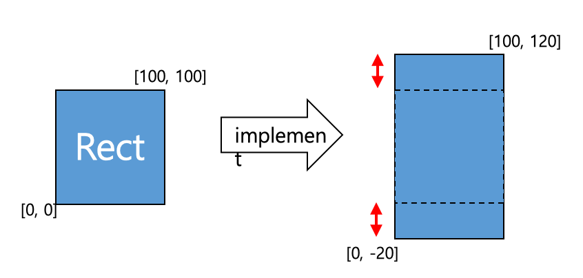>>> import laygo2 >>> rect0 = laygo2.object.physical.Rect(xy=[[0, 0], [100, 100]], layer=['M1', 'drawing'], netname='net0', hextension=20, vextension=20) >>> rect0.vextension 20
Notes
(Korean): 객체의 기존 좌표로부터 수직 방향으로의 확장값.
- Type:
- property width#
The width of the object.
Example
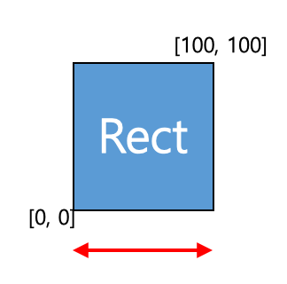>>> import laygo2 >>> rect0 = laygo2.object.physical.Rect(xy=[[0, 0], [100, 100]], layer=['M1', 'drawing']) >>> rect0.width 100
Notes
(Korean): int: 객체의 폭.
- Type:
- property width_vec#
The width direction vector [self.width, 0] of the object.
- Type:
numpy.ndarray(dtype=int)
- property xy#
Retrive x,y coordinate values of the object.
- Type:
numpy.ndarray(dtype=numpy.int)
{kind=link}
{kind=link}
{kind=link}
{kind=link}
{kind=link}
{kind=link}
{kind=link}
{kind=link}
{kind=link}
{kind=link}
{kind=link}